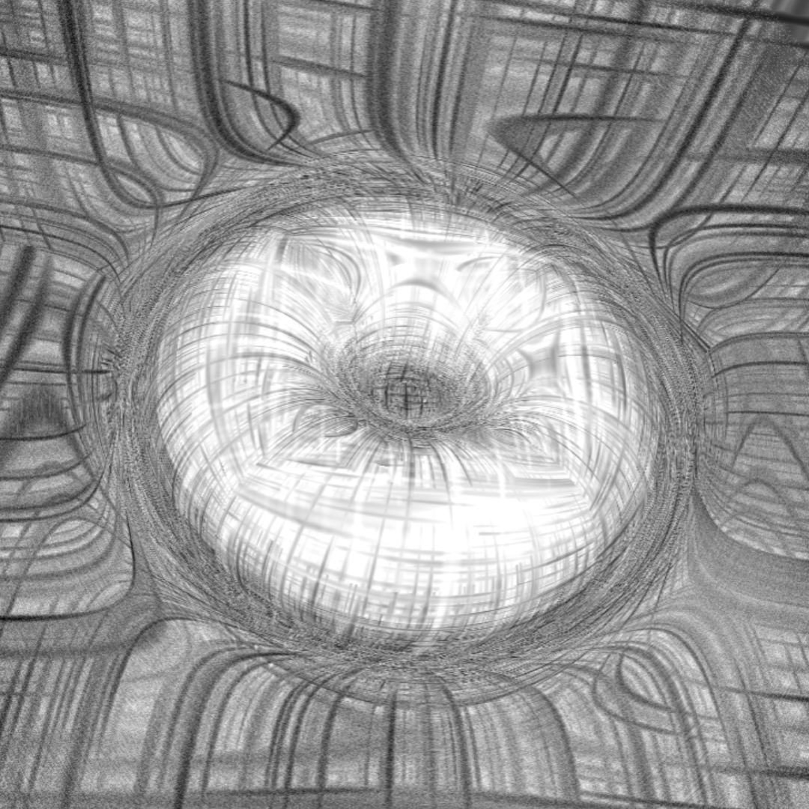

光影運算 教學
Topics on Shading and Lighting*本頁建議使用pc觀看喔!*
I. Raymarching
> map functions & raymarching
//=== map functions ===
float map(in vec3 p)
{
//return sdSphere(p+vec3(0.,0.,1.0), 0.4);
//return sdTorus(p+vec3(0.,0.,1.0),vec2(0.4,0.05));
//return sdBox(p+vec3(0.0,0.0,1.0), vec3(0.2, 0.2, 0.2));
//方形中挖掉圓形
return max(sdBox(p+vec3(0.0,0.0,1.0), vec3(0.3, 0.3, 0.3)), -sdSphere(p+vec3(0.,0.,1.0), 0.5));
}
// === raymarching===
float trace(vec3 o, vec3 r)
{
float t=0.0;
for (int i=0; i<32; ++i)
{
vec3 p= o+r*t;
float d= map(p);
t += d*0.3;
}
return t;
}
> usually used functions
//=== sky ===
float fbm(in vec2 uv);
vec3 getSkyFBM(vec3 e) { //二維雲霧
vec3 f=e;
float m = 2.0 * sqrt(f.x*f.x + f.y*f.y + f.z*f.z);
vec2 st= vec2(-f.x/m + .5, -f.y/m + .5);
//vec3 ret=texture2D(iChannel0, st).xyz;
float fog= fbm(0.6*st+vec2(-0.2*u_time, -0.02*u_time))*0.5+0.3;
return vec3(fog);
}
vec3 sky_color(vec3 e) { //漸層藍天空色
e.y = max(e.y,0.0);
vec3 ret;
ret.x = pow(1.0-e.y,3.0);
ret.y = pow(1.0-e.y, 1.2);
ret.z = 0.8+(1.0-e.y)*0.3;
return ret;
}
//=== flame color ===
// thanks iq..
// Smooth HSV to RGB conversion
vec3 hsv2rgb_smooth( in vec3 c )
{
vec3 rgb = clamp( abs(mod(c.x*6.0+vec3(0.0,4.0,2.0),6.0)-3.0)-1.0, 0.0, 1.0 );
rgb = rgb*rgb*(3.0-2.0*rgb); // cubic smoothing
return c.z * mix( vec3(1.0), rgb, c.y);
}
vec3 hsv2rgb_trigonometric( in vec3 c )
{
vec3 rgb = 0.5 + 0.5*cos((c.x*6.0+vec3(0.0,4.0,2.0))*3.14159/3.0);
return c.z * mix( vec3(1.0), rgb, c.y);
}
vec3 FlameColour(float f)
{
return hsv2rgb_smooth(vec3((f-(2.25/6.))*(1.25/6.),f*1.25+.2,f*.95));
}
vec3 getSkyALL(vec3 e)
{
return sky_color(e);
}
//=== camera functions ===
mat3 setCamera( in vec3 ro, in vec3 ta, float cr )
{
vec3 cw = normalize(ta-ro);
vec3 cp = vec3(sin(cr), cos(cr),0.0);
vec3 cu = normalize( cross(cw,cp) );
vec3 cv = normalize( cross(cu,cw) );
return mat3( cu, cv, cw );
}
// math
mat3 fromEuler(vec3 ang) {
vec2 a1 = vec2(sin(ang.x),cos(ang.x));
vec2 a2 = vec2(sin(ang.y),cos(ang.y));
vec2 a3 = vec2(sin(ang.z),cos(ang.z));
vec3 m0 = vec3(a1.y*a3.y+a1.x*a2.x*a3.x,
a1.y*a2.x*a3.x+a3.y*a1.x,-a2.y*a3.x);
vec3 m1 = vec3(-a2.y*a1.x,a1.y*a2.y,a2.x);
vec3 m2 = vec3(a3.y*a1.x*a2.x+a1.y*a3.x,
a1.x*a3.x-a1.y*a3.y*a2.x,a2.y*a3.y);
return mat3(m0, m1, m2);
}
//=== gradient functions ===
vec3 gradient( in vec3 p ) //尚未normalize
{
const float d = 0.001;
vec3 grad = vec3(map(p+vec3(d,0,0))-map(p-vec3(d,0,0)),
map(p+vec3(0,d,0))-map(p-vec3(0,d,0)),
map(p+vec3(0,0,d))-map(p-vec3(0,0,d)));
return grad;
}
> Show Normal
show normals of the surface of the model
void main(){
vec2 uv = gl_FragCoord.xy/u_resolution.xy;
uv = uv*2.0-1.0;
uv.x*= u_resolution.x/u_resolution.y;
uv.y*=1.0;//校正 預設值uv v軸朝下，轉成v軸朝上相同於y軸朝上為正
vec2 mouse=(u_mouse.xy/u_resolution.xy)*2.0-1.0;
// camera option1 (模型應在原點，適用於物件)
vec3 CameraRot=vec3(0.0, mouse.y, mouse.x);
vec3 ro= vec3(0.0, 0.0, 1.0)*fromEuler(CameraRot); //CameraPos;
vec3 ta =vec3(0.0, 0.0, 0.0); //TargetPos;
//vec3 ta =float3(CameraDir.x, CameraDir.z, CameraDir.y);
//UE座標Z軸在上
mat3 ca = setCamera( ro, ta, 0.0 );
vec3 RayDir = ca*normalize(vec3(uv, 1.0));
//z值越大則zoom in，可替換成iMouse.z
vec3 RayOri = ro;
// camera option2 (攝影機在原點，適用於場景)
/*
vec3 CameraRot=vec3(0.0, -iMouse.y, -iMouse.x);
vec3 RayOri= vec3(0.0, 0.0, 0.0);//CameraPos;
vec3 RayDir = normalize(vec3(uv, -1.))*fromEuler(CameraRot);
*/
vec3 p,n;
float t = trace(RayOri, RayDir, p); //position
n=normalize(gradient(p)); //normal
//SHADING
vec3 result;
result=(p);
//result=(n);
//HDR環境貼圖
vec3 BG=getSkyALL(RayDir); //或getSkyFBM(RayDir)
gl_FragColor = vec4(vec3(result),1.0);
if(t<3.5) gl_FragColor = vec4(vec3(result),1.0);
else gl_FragColor = vec4(BG,1.0);
}

> Show Reflection
void main(){
vec2 uv = gl_FragCoord.xy/u_resolution.xy;
uv = uv*2.0-1.0;
uv.x*= u_resolution.x/u_resolution.y;
uv.y*=1.0;//校正 預設值uv v軸朝下，轉成v軸朝上相同於y軸朝上為正
vec2 mouse=(u_mouse.xy/u_resolution.xy)*2.0-1.0;
// camera option1 (模型應在原點，適用於物件)
vec3 CameraRot=vec3(0.0, mouse.y, 3.0);
vec3 ro= vec3(0.0, 0.0, 1.0)*fromEuler(CameraRot);//CameraPos;
vec3 ta =vec3(0.0, 0.0, 0.0); //TargetPos;
//vec3 ta =float3(CameraDir.x, CameraDir.z, CameraDir.y);
//UE座標Z軸在上
mat3 ca = setCamera( ro, ta, 0.0 );
vec3 RayDir = ca*normalize(vec3(uv, 2.0));
//z值越大則zoom in，可替換成iMouse.z
vec3 RayOri = ro;
// camera option2 (攝影機在原點，適用於場景)
/*
vec3 CameraRot=vec3(0.0, -iMouse.y, -iMouse.x);
vec3 RayOri= vec3(0.0, 0.0, 0.0); //CameraPos;
vec3 RayDir = normalize(vec3(uv, -1.))*fromEuler(CameraRot);
*/
vec3 p,n;
float t = trace(RayOri, RayDir, p); //position
n=normalize(gradient(p)); //normal
//SHADING
vec3 result=getSkyALL(reflect(RayDir,n)); //p or n
//HDR環境貼圖
vec3 BG=getSkyALL(RayDir); //或getSkyFBM(RayDir)
gl_FragColor = vec4(vec3(result),1.0);
if(t<3.5) gl_FragColor = vec4(vec3(result),1.0);
else gl_FragColor = vec4(BG,1.0);
}

II. Add Noise
> common functions
//=== 3d noise functions ===
float hash11(float p) {
return fract(sin(p * 727.1)*43758.5453123);
}
float hash12(vec2 p) {
float h = dot(p,vec2(127.1,311.7));
return fract(sin(h)*43758.5453123);
}
vec3 hash31(float p) {
vec3 h = vec3(1275.231,4461.7,7182.423) * p;
return fract(sin(h)*43758.543123);
}
// 3d noise
float noise_3(in vec3 p) {
vec3 i = floor(p);
vec3 f = fract(p);
vec3 u = f*f*(3.0-2.0*f);
vec2 ii = i.xy + i.z * vec2(5.0);
float a = hash12( ii + vec2(0.0,0.0) );
float b = hash12( ii + vec2(1.0,0.0) );
float c = hash12( ii + vec2(0.0,1.0) );
float d = hash12( ii + vec2(1.0,1.0) );
float v1 = mix(mix(a,b,u.x), mix(c,d,u.x), u.y);
ii += vec2(5.0);
a = hash12( ii + vec2(0.0,0.0) );
b = hash12( ii + vec2(1.0,0.0) );
c = hash12( ii + vec2(0.0,1.0) );
d = hash12( ii + vec2(1.0,1.0) );
float v2 = mix(mix(a,b,u.x), mix(c,d,u.x), u.y);
return max(mix(v1,v2,u.z),0.0);
}
//=== 2d noise functions ===
vec2 hash2( vec2 x ) //亂數範圍 [-1,1]
{
const vec2 k = vec2( 0.3183099, 0.3678794 );
x = x*k + k.yx;
return -1.0 + 2.0*fract( 16.0 * k*fract( x.x*x.y*(x.x+x.y)) );
}
float gnoise( in vec2 p ) //亂數範圍 [-1,1]
{
vec2 i = floor( p );
vec2 f = fract( p );
vec2 u = f*f*(3.0-2.0*f);
return mix( mix( dot( hash2( i + vec2(0.0,0.0) ), f - vec2(0.0,0.0) ),
dot( hash2( i + vec2(1.0,0.0) ), f - vec2(1.0,0.0) ), u.x),
mix( dot( hash2( i + vec2(0.0,1.0) ), f - vec2(0.0,1.0) ),
dot( hash2( i + vec2(1.0,1.0) ), f - vec2(1.0,1.0) ), u.x), u.y);
}
float fbm(in vec2 uv) //亂數範圍 [-1,1]
{
float f; //fbm - fractal noise (4 octaves)
mat2 m = mat2( 1.6, 1.2, -1.2, 1.6 );
f = 0.5000*gnoise( uv ); uv = m*uv;
f += 0.2500*gnoise( uv ); uv = m*uv;
f += 0.1250*gnoise( uv ); uv = m*uv;
f += 0.0625*gnoise( uv ); uv = m*uv;
return f;
}
//=== 3d noise functions p/n ===
vec3 smoothSampling2(vec2 uv)
{
const float T_RES = 32.0;
return vec3(gnoise(uv*T_RES)); //讀取亂數函式
}
float triplanarSampling(vec3 p, vec3 n)
{
float fTotal = abs(n.x)+abs(n.y)+abs(n.z);
return (abs(n.x)*smoothSampling2(p.yz).x
+abs(n.y)*smoothSampling2(p.xz).x
+abs(n.z)*smoothSampling2(p.xy).x)/fTotal;
}
const mat2 m2 = mat2(0.90,0.44,-0.44,0.90);
float triplanarNoise(vec3 p, vec3 n)
{
const float BUMP_MAP_UV_SCALE = 0.2;
float fTotal = abs(n.x)+abs(n.y)+abs(n.z);
float f1 = triplanarSampling(p*BUMP_MAP_UV_SCALE,n);
p.xy = m2*p.xy;
p.xz = m2*p.xz;
p *= 2.1;
float f2 = triplanarSampling(p*BUMP_MAP_UV_SCALE,n);
p.yx = m2*p.yx;
p.yz = m2*p.yz;
p *= 2.3;
float f3 = triplanarSampling(p*BUMP_MAP_UV_SCALE,n);
return f1+0.5*f2+0.25*f3;
}
> Make Bumping
void main(){
vec2 uv = gl_FragCoord.xy/u_resolution.xy;
uv = uv*2.0-1.0;
uv.x*= u_resolution.x/u_resolution.y;
uv.y*=1.0;//校正 預設值uv v軸朝下，轉成v軸朝上相同於y軸朝上為正
vec2 mouse=(u_mouse.xy/u_resolution.xy)*2.0-1.0;
// camera option1 (模型應在原點，適用於物件)
vec3 CameraRot=vec3(0.0, mouse.y*2., -mouse.x);
vec3 ro= vec3(0.0, 0.0, 2.0)*fromEuler(CameraRot);//CameraPos;
vec3 ta =vec3(0.0, 0.0, 0.0); //TargetPos;
//vec3 ta =float3(CameraDir.x, CameraDir.z, CameraDir.y);
//UE座標Z軸在上
mat3 ca = setCamera( ro, ta, 0.0 );
vec3 RayDir = ca*normalize(vec3(uv, 2.0));
//z值越大則zoom in，可替換成iMouse.z
vec3 RayOri = ro;
// camera option2 (攝影機在原點，適用於場景)
/*
vec3 CameraRot=vec3(0.0, -iMouse.y, -iMouse.x);
vec3 RayOri= vec3(0.0, 0.0, 0.0);//CameraPos;
vec3 RayDir = normalize(vec3(uv, -1.))*fromEuler(CameraRot);
*/
vec3 p,n;
float t = trace(RayOri, RayDir, p);
n=normalize(gradient(p));
//sol2
/*
float displacement = 10. * (noise_3(p*10.0)*2.0-1.0);
p += n*displacement;
n=normalize(gradient(p));
*/
//sol3
vec3 bump = normalMap(p*1.6,n);//調整bumping密度
n += bump*2.;
float edge = dot(-RayDir,n);
//RayDir : 相機看出去的方向
//-RayDir : 看向攝影機的方向
//edge*=-1.;
edge = smoothstep(.2,.4,edge);
//smoothstep產生一點灰階 vs. step單純畫邊緣
//SHADING
vec3 result=n;
result = vec3(edge)*FlameColour(edge);
//HDR環境貼圖
vec3 BG=getSkyALL(RayDir); //或getSkyFBM(RayDir)
//亂數作用雲霧(二維)
//float fog= fbm(0.6*uv+vec2(-0.2*u_time, -0.02*u_time))*0.5+0.3;
//vec3 fogFBM=getSkyFBM(reflect(RayDir,n));
if(t<2.5) gl_FragColor = vec4(vec3(result),1.0);
else gl_FragColor = vec4(BG,1.0);
}

> Toon Edge
void main(){
vec2 uv = gl_FragCoord.xy/u_resolution.xy;
uv = uv*2.0-1.0;
uv.x*= u_resolution.x/u_resolution.y;
uv.y*=1.0;//校正 預設值uv v軸朝下，轉成v軸朝上相同於y軸朝上為正
vec2 mouse=(u_mouse.xy/u_resolution.xy)*2.0-1.0;
// camera option1 (模型應在原點，適用於物件)
vec3 CameraRot=vec3(0.0, mouse.y*3.0, -mouse.x);
vec3 ro= vec3(0.0, 0.0, 2.0)*fromEuler(CameraRot);//CameraPos;
vec3 ta =vec3(0.0, 0.0, 0.0); //TargetPos;
//vec3 ta =float3(CameraDir.x, CameraDir.z, CameraDir.y);
//UE座標Z軸在上
mat3 ca = setCamera( ro, ta, 0.0 );
vec3 RayDir = ca*normalize(vec3(uv, 2.0));
//z值越大即zoom in，可替換成iMouse.z
vec3 RayOri = ro;
// camera option2 (攝影機在原點，適用於場景)
/*
vec3 CameraRot=vec3(0.0, -iMouse.y, -iMouse.x);
vec3 RayOri= vec3(0.0, 0.0, 0.0); //CameraPos;
vec3 RayDir = normalize(vec3(uv, -1.))*fromEuler(CameraRot);
*/
vec3 p,n;
float t = trace(RayOri, RayDir, p);
n=normalize(gradient(p));
vec3 bump=normalMap(p*1.652,n);
//n=n+bump*0.5;
float edge= dot(-RayDir, n);
//edge = step(0.2, edge);
edge = smoothstep(-0.272, 0.400, edge);
//SHADING
vec3 result=n;
result = vec3(edge);
//HDR環境貼圖
vec3 BG=getSkyALL(RayDir);//或getSkyFBM(RayDir)
//亂數作用雲霧(二維)
//float fog= fbm(0.6*uv+vec2(-0.2*u_time, -0.02*u_time))*0.5+0.3;
//vec3 fogFBM=getSkyFBM(reflect(RayDir,n));
if(t<2.5) gl_FragColor = vec4(vec3(result),1.0);
else gl_FragColor = vec4(BG,1.0);
}

> Ambient Occlusion
//=== iq’s calc AO ===
float calcAO( in vec3 pos, in vec3 nor )
{
float ao = 0.0;
vec3 v = normalize(vec3(0.7,-0.1,0.1));
for( int i=0; i<12; i++ )
{
float h = abs(sin(float(i)));
vec3 kv = v + 2.0*nor*max(0.0,-dot(nor,v));
ao += clamp( map(pos+nor*0.01+kv*h*0.08)*3.0, 0.0, 1.0 );
v = v.yzx; //if( (i&2)==2) v.yz *= -1.0;
}
ao /= 12.0;
ao = ao + 2.0*ao*ao;
return clamp( ao*5.0, 0.0, 1.0 );
}

// Toon Edge 的 Shading 換成 calAO
result = vec3(calcAO(p,n));
III. Phong Shading
Phong Shading Model = ambient + diffuse + specular light
> common functions
vec3 phong(vec3 p, vec3 n, vec3 v){
vec3 final=vec3(0.0);
vec3 diffuse,specular,ambient;
ambient=vec3(0.305,0.049,0.049);
vec3 light_pos= vec3(5.000,1.000,2.000);
vec3 light_col= vec3(0.955,0.819,0.231);
vec3 l=normalize(light_pos-p); //光線向量
vec3 r=normalize(reflect(-l,n));
float ka=0.1, ks=1.0, kd=1.0;
float shininess=8.0;
diffuse=vec3(kd*dot(l, n));
specular=vec3(ks* pow(max(dot(r, v),0.0), shininess)) ;
final+=(diffuse+specular)*light_col;
return final+ambient;
}
> Add Lights & Tracing Model
void main(){
vec2 uv = gl_FragCoord.xy/u_resolution.xy;
uv = uv*2.0-1.0;
uv.x*= u_resolution.x/u_resolution.y;
uv.y*=1.0;//校正 預設值uv v軸朝下，轉成v軸朝上相同於y軸朝上為正
vec2 mouse=(u_mouse.xy/u_resolution.xy)*2.0-1.0;
// camera option1 (模型應在原點，適用於物件)
//vec3 CameraRot=vec3(0.0, mouse.y*3.0, -mouse.x);
vec3 CameraRot=vec3(0.0, -0.8, 0.0);
vec3 ro= vec3(0.0, 0.0, 2.0)*fromEuler(CameraRot);//CameraPos;
vec3 ta =vec3(0.0, 0.0, 0.0); //TargetPos; /
/vec3 ta =float3(CameraDir.x, CameraDir.z, CameraDir.y);
//UE座標Z軸在上
mat3 ca = setCamera( ro, ta, 0.0 );
vec3 RayDir = ca*normalize(vec3(uv, 2.0));
//z值越大則zoom in，可替換成iMouse.z
vec3 RayOri = ro;
// camera option2 (攝影機在原點，適用於場景)
/*
vec3 CameraRot=vec3(0.0, -iMouse.y, -iMouse.x);
vec3 RayOri= vec3(0.0, 0.0, 0.0); //CameraPos;
vec3 RayDir = normalize(vec3(uv, -1.))*fromEuler(CameraRot);
*/
vec3 p,n;
float t = trace(RayOri, RayDir, p);
n=normalize(gradient(p));
vec3 bump=normalMap(p*1.652,n);
float edge= dot(-RayDir, n);
//edge = step(0.2, edge);
edge = smoothstep(-0.272, 0.400, edge);
//SHADING
vec3 result=n;
result = phong(p,n,-RayDir);
//HDR環境貼圖
vec3 BG=getSkyALL(RayDir); //或getSkyFBM(RayDir)
if(t<2.5) gl_FragColor = vec4(vec3(result),1.0);
else gl_FragColor = vec4(BG,1.0);
}

> Multiple Models
SDF(signed distance function)
// SDF of Sphere
float sdSphere(vec3 p){
vec4 sphere = vec4(0.,1.,6.,2.);
float dSphere = distance(p,sphere.xyz)-sphere.w;
return dSphere;
}
// SDF of Plane
float sdPlane(vec3 p){
float plane_y = -0.948;
float dPlane = abs(p.y-plane_y);
return dPlane;
}
// All SDFs
float GetDist(vec3 p){
//SDF中，模型要擺在同一個場景要用min，
//取最短距離，因為較近的距離一定在畫面前方，
//遠的就會被遮擋。
return min(sdPlane(p),sdSphere(p));
}
Raymarching
float RayMarching(vec3 ro,vec3 rd){
float dO = 0.;
for(int i = 0 ; i < 64 ; i++){
vec3 p = ro+rd*dO;
float ds = GetDist(p);
dO += ds;
if(ds<0.01 || dO>100.)
break;
}
return dO;
}
Get Lights
//燈光的模板
struct Light{
vec3 p; // position
vec3 id; // diffuse color
vec3 is; // specular color
};
struct Mat{
float ka; // factor of abient
float kd; // factor of diffuse
float ks; // factor of specular
float s; // shiness
};
vec3 CalLight(Light l,Mat m,vec3 p, vec3 n,vec3 rd){
vec3 diffuse,specular;
vec3 ld =normalize(l.p - p); //Light Dir
vec3 vr =reflect(rd,n); //View Reflect
diffuse = m.kd*max(dot(ld,n),0.)*l.id;
specular = m.ks*pow(max(dot(vr,ld),0.),m.s)*l.is;
// shadow
float d = RayMarching(p+n*0.03,ld);
if(d < length(l.p - p)) diffuse *= 0.1;
return diffuse + specular;
}
vec3 lighting(vec3 p ,vec3 n , vec3 v,vec3 rd){
// Define Lights
//左到右的input分別是，position , diffuse color , specular color ，可以參照上方struct Light
Light l1 = Light(vec3(5.,0.,0.),vec3(1.000,0.216,0.292),vec3(1.,1.,1.));
Light l2 = Light(vec3(-5.,1.,-5.),vec3(0.029,0.119,0.805),vec3(1.,1.,1.));
Light l3 = Light(vec3(-1.5,1.5,3.),vec3(0.855,0.756,0.273),vec3(1.,1.,1.));
// Material Properties
vec3 ambient,final;
float ka = 0.5;
Mat mat = Mat(1.,1.,1.,150.); // 設定material的參數，ka, kd, ks, s的數值大小
ambient = ka*vec3(0.095,0.037,0.012); // 決定底色
final = ambient;
final += CalLight(l1,mat,p,n,rd); // 加上第一盞燈光的渲染
final += CalLight(l2,mat,p,n,rd); // 加上第二盞燈光的渲染
final += CalLight(l3,mat,p,n,rd); // 加上第三盞燈光的渲染
return final;
}
vec3 GetNormal(vec3 p){
vec2 e = vec2(0.01,0.0);
vec3 n = vec3(
GetDist(p+e.xyy),
GetDist(p+e.yxy),
GetDist(p+e.yyx))-GetDist(p);
return normalize(n);
}
// main step by step
void main() {
vec2 st = (gl_FragCoord.xy/u_resolution.xy)*2.-1.;
// ro -> ray origin
vec3 ro = vec3(0.,-0.2,0.);
// rd -> ray direction
vec3 rd = normalize(vec3(st.xy,1.));
// t -> distance
float t = RayMarching(ro,rd);
// p -> vertex pos
vec3 p = ro+rd*t;
// n -> normal dir
vec3 n = GetNormal(p);
//calculate lighting
vec3 color = lighting(p,n,ro,rd);
gl_FragColor = vec4(color,1.0);
}

> Subsurface
float traceInner(vec3 o, vec3 r, out vec3 p)
{
float d=0.0, t=0.01;
//讓初始點不要從p開始(一點偏移)
// p : 第一次trace找到表面的點
for (int i=0; i<16; ++i)//節省一下效能
{
p= o+r*t;
d=-map(p);//為了底下的判斷，將map出來改成正的
if(d<0.001 || t>10.) break;//在表面內
t += d*0.5; //繼續往表面內部走
}
return t;
}

// first ray
vec3 p,n;
float t = trace(RayOri, RayDir, p);//第一次的距離
n=normalize(gradient(p));
vec3 bump=normalMap(p*3.0,n);
n=n+bump*0.05;
float edge= dot(-RayDir, n);
//edge = step(0.2, edge);
edge = smoothstep(-0.328, 0.312, edge);
// second ray
vec3 p2,n2;// new position and normal
float IOR = 1.31;//折射率
vec3 Rd2 = refract(RayDir, n, 1.0/IOR);//折射 : 由空氣進入物體內部
float t2 = traceInner(p, Rd2, p2);//第二次的距離
n2=normalize(gradient(p2));
//third ray
vec3 Rd3 = refract(Rd2, -n2, IOR);//由物體內部進入空氣
//注意n2方向 : 朝物體內部or朝外
> Style
Warp Color
vec4 warpcolor(in vec2 uv, float t){ //Normalized uv[0~1]
float strength = 0.4;
vec3 col = vec3(0);
//pos coordinates (from -1 to 1)
vec2 pos = uv*2.0-1.0;
//請小心！QC迴圈最好使用int index，float index有可能錯誤！
for(int i = 1; i < 7; i++){//疊幾層
pos.x += strength * sin(2.0*t+float(i)*1.5 * pos.y)+t*0.5;
pos.y += strength * cos(2.0*t+float(i)*1.5 * pos.x);}
//Time varying pixel colour
col += 0.5 + 0.5*cos(t+pos.xyx+vec3(0,2,4));
//Gamma
col = pow(col, vec3(0.4545));
return vec4(col,1.0) ;
}
void main()
{
vec2 uv = gl_FragCoord.xy/u_resolution.xy;
uv.x*= u_resolution.x/u_resolution.y;
vec4 color = warpcolor(uv, u_time/10.);
gl_FragColor = vec4(color);
}

Minecraft
// === raytrace functions===
float trace(vec3 o, vec3 r, out vec3 p, out float d)
{
float t=0.0;
for (int i=0; i<32; ++i)
{
p = o+r*t;
p = pixel(p, 10.);//格化
d = map(p);
if(d<0.0){
break;
}
t += d*0.5; //影響輪廓精準程度
}
return t;
}

vec2 pixel(vec2 p, float scale){
return floor(p*scale)/scale;
//floor : 無條件捨去
}
vec3 pixel(vec3 p, float scale){
return floor(p*scale)/scale;
}
Unstable distance(play distance and time)
// in main function
// SHADING
vec3 result=n;
vec3 ao=vec3(calcAO(p,n));
result = vec3(exp(-d*10000000.));//打得到物體 : d數值趨近於零(黑色)
//result = vec3(t*.2);//距離攝影機的深度

Hatching
uniform sampler2D u_tex0;
uniform sampler2D u_tex1;
uniform sampler2D u_tex2;
uniform sampler2D u_tex3;
uniform sampler2D u_tex4;
uniform sampler2D u_tex5;
uniform sampler2D u_tex6;
uniform sampler2D u_tex7;

vec4 hatching(float shading)
{
vec2 uv= gl_FragCoord.xy/u_resolution.xy;
vec2 vUv=fract(6.0*uv); //key
//float shading= texture2D(u_tex7, uv).g;
vec4 c;
float step = 1. / 6.;
if( shading <= step ){
c = mix( texture2D( u_tex6, vUv ), texture2D( u_tex5, vUv ), 6. * shading );
}
if( shading > step && shading <= 2. * step ){
c = mix( texture2D( u_tex5, vUv ), texture2D( u_tex4, vUv) , 6. * ( shading - step ) );
}
if( shading > 2. * step && shading <= 3. * step ){
c = mix( texture2D( u_tex4, vUv ), texture2D( u_tex3, vUv ), 6. * ( shading - 2. * step ) );
}
if( shading > 3. * step && shading <= 4. * step ){
c = mix( texture2D( u_tex3, vUv ), texture2D( u_tex2, vUv ), 6. * ( shading - 3. * step ) );
}
if( shading > 4. * step && shading <= 5. * step ){
c = mix( texture2D( u_tex2, vUv ), texture2D( u_tex1, vUv ), 6. * ( shading - 4. * step ) );
}
if( shading > 5. * step ){
c = mix( texture2D( u_tex1, vUv ), vec4( 1. ), 6. * ( shading - 5. * step ) );
}
vec4 inkColor = vec4(0.0, 0.0, 1.0, 1.0);
vec4 src = mix( mix( inkColor, vec4( 1. ), c.r ), c, .5 );
return src;
}
// in main function
// SHADING
vec3 result=n;
result = hatching(VdotN).rgb*edge;
Raymarching field
vec3 hatching(vec3 p, vec3 n, float value){
vec3 col;
//float str=10.0;
float NdotL=(1.0-value)*10.0;
vec3 col1 = vec3(texcube (p,n,NdotL));
vec3 col2 = vec3(cubeproj(p,NdotL));
col = mix(col1,col2, 3.0);
return col;
}

//in main function
vec3 p,n;
float t = trace(RayOri, RayDir, p); //position
n=normalize(gradient(p)); //normal
//n+=0.5*normalMap(p,n); //add normal detail
float VdotN=dot(-RayDir,n);
float edge=min(max(smoothstep(-0.388,1.710,VdotN),0.0),1.0);
//SHADING
vec3 result;
result=hatching(p, n, edge);
IV. Distance Functions
> common functions
//=== distance functions ===
float sdSphere( vec3 p, float s )
{
return length(p)-s;
}
float sdBox( vec3 p, vec3 b )
{
vec3 d = abs(p) - b;
return min(max(d.x,max(d.y,d.z)),0.0) + length(max(d,0.0));
}
float sdTorus( vec3 p, vec2 t )
{
vec2 q = vec2(length(p.xy)-t.x,p.z);
return length(q)-t.y;
}
float sdCappedTorus(vec3 p, vec2 sc, float ra, float rb)
{
p.x = abs(p.x);
float k = (sc.y*p.x>sc.x*p.y) ? dot(p.xy,sc) : length(p.xy);
return sqrt( dot(p,p) + ra*ra - 2.0*ra*k ) - rb;
}
float sdBox3D( vec3 p, vec3 b )
{
vec3 q = abs(p) - b;
return length(max(q,0.0)) + min(max(q.x,max(q.y,q.z)),0.0);
}
float sdSphere3D( vec3 p, float s )
{
return length(p)-s;
}
> Lady Bug
//#define MAT_MUSH_HEAD 1.0
//#define MAT_MUSH_NECK 2.0
#define MAT_LADY_BODY 3.0
#define MAT_LADY_HEAD 4.0
#define MAT_LADY_LEGS 5.0
//#define MAT_GRASS 6.0
//#define MAT_GROUND 7.0
//#define MAT_MOSS 8.0
//#define MAT_CITA 9.0
//vec2 hash2( vec2 p ) { p=vec2(dot(p,vec2(127.1,311.7)), dot(p,vec2(269.5,183.3))); return fract(sin(p)*18.5453); }
vec3 hash3( float n ) { return fract(sin(vec3(n,n+1.0,n+2.0))*vec3(338.5453123,278.1459123,191.1234)); }
float dot2(in vec2 p ) { return dot(p,p); }
float dot2(in vec3 p ) { return dot(p,p); }
vec2 sdLine( in vec2 p, in vec2 a, in vec2 b )
{
vec2 pa = p - a;
vec2 ba = b - a;
float h = clamp( dot(pa,ba)/dot(ba,ba), 0.0, 1.0 );
return vec2( length(pa-h*ba), h );
}
vec2 sdLine( in vec3 p, in vec3 a, in vec3 b )
{
vec3 pa = p - a;
vec3 ba = b - a;
float h = clamp( dot(pa,ba)/dot(ba,ba), 0.0, 1.0 );
return vec2( length(pa-h*ba), h );
}
vec2 sdLineOri( in vec3 p, in vec3 b )
{
float h = clamp( dot(p,b)/dot(b,b), 0.0, 1.0 );
return vec2( length(p-h*b), h );
}
vec2 sdLineOriY( in vec3 p, in float b )
{
float h = clamp( p.y/b, 0.0, 1.0 );
p.y -= b*h;
return vec2( length(p), h );
}
float sdEllipsoid( in vec3 pos, in vec3 cen, in vec3 rad )
{
vec3 p = pos - cen;
float k0 = length(p/rad);
float k1 = length(p/(rad*rad));
return k0*(k0-1.0)/k1;
}
/*
float smin( float a, float b, float k )
{
float h = max(k-abs(a-b),0.0);
return min(a, b) - h*h*0.25/k;
}
*/
float smax( float a, float b, float k )
{
float h = max(k-abs(a-b),0.0);
return max(a, b) + h*h*0.25/k;
}
vec3 rotateX( in vec3 p, float t )
{
float co = cos(t);
float si = sin(t);
p.yz = mat2(co,-si,si,co)*p.yz;
return p;
}
vec3 rotateY( in vec3 p, float t )
{
float co = cos(t);
float si = sin(t);
p.xz = mat2(co,-si,si,co)*p.xz;
return p;
}
vec3 rotateZ( in vec3 p, float t )
{
float co = cos(t);
float si = sin(t);
p.xy = mat2(co,-si,si,co)*p.xy;
return p;
}
//==================================================
//#define ZERO (min(iFrame,0))
//==================================================
vec3 mapLadyBug( vec3 p )
{
float dBody = sdEllipsoid( p, vec3(0.0), vec3(0.8, 0.75, 1.0) );
dBody = smax( dBody, -sdEllipsoid( p, vec3(0.0,-0.1,0.0), vec3(0.75, 0.7, 0.95) ), 0.05 );
dBody = smax( dBody, -sdEllipsoid( p, vec3(0.0,0.0,0.8), vec3(0.35, 0.35, 0.5) ), 0.05 );
dBody = smax( dBody, sdEllipsoid( p, vec3(0.0,1.7,-0.1), vec3(2.0, 2.0, 2.0) ), 0.05 );
dBody = smax( dBody, -abs(p.x)+0.005, 0.02 + 0.1*clamp(p.z*p.z*p.z*p.z,0.0,1.0) );
vec3 res = vec3( dBody, MAT_LADY_BODY, 0.0 );
// --------
vec3 hc = vec3(0.0,0.1,0.8);
vec3 ph = rotateX(p-hc,0.5);
float dHead = sdEllipsoid( ph, vec3(0.0,0.0,0.0), vec3(0.35, 0.25, 0.3) );
dHead = smax( dHead, -sdEllipsoid( ph, vec3(0.0,-0.95,0.0), vec3(1.0) ), 0.03 );
dHead = min( dHead, sdEllipsoid( ph, vec3(0.0,0.1,0.3), vec3(0.15,0.08,0.15) ) );
if( dHead < res.x ) res = vec3( dHead, MAT_LADY_HEAD, 0.0 );
res.x += 0.0007*sin(150.0*p.x)*sin(150.0*p.z)*sin(150.0*p.y); // iqiq
// -------------
vec3 k1 = vec3(0.42,-0.05,0.92);
vec3 k2 = vec3(0.49,-0.2,1.05);
float dLegs = 10.0;
float sx = sign(p.x);
p.x = abs(p.x);
for( int k=0; k<3; k++ )
{
vec3 q = p;
q.y -= min(sx,0.0)*0.1;
if( k==0) q += vec3( 0.0,0.11,0.0);
if( k==1) q += vec3(-0.3,0.1,0.2);
if( k==2) q += vec3(-0.3,0.1,0.6);
vec2 se = sdLine( q, vec3(0.3,0.1,0.8), k1 );
se.x -= 0.015 + 0.15*se.y*se.y*(1.0-se.y);
dLegs = min(dLegs,se.x);
se = sdLine( q, k1, k2 );
se.x -= 0.01 + 0.01*se.y;
dLegs = min(dLegs,se.x);
se = sdLine( q, k2, k2 + vec3(0.1,0.0,0.1) );
se.x -= 0.02 - 0.01*se.y;
dLegs = min(dLegs,se.x);
}
if( dLegs> Map Woman
vec2 boxIntersect(in vec3 ro, in vec3 rd, in vec3 rad) {
vec3 m = 1./rd;
vec3 n = m*ro;
vec3 k = abs(m)*rad;
vec3 t1 = -n - k;
vec3 t2 = -n + k;
float tN = max(max(t1.x, t1.y), t1.z);
float tF = min(min(t2.x, t2.y), t2.z);
if(tN > tF || tF < .0) return vec2(-1);
return vec2(tN, tF);
}
float smin(float a, float b, float k) {
float h = clamp(.5 + .5*(b - a)/k, .0, 1.);
return mix(b, a, h) - k * h * (1. - h);
}
float udRoundBox(vec3 p, vec3 b, float r) {
return length(max(abs(p)-b, .0)) -r;
}
float sdCapsuleF(vec3 p, vec3 a, vec3 b, const float r0, const float r1, const float f) {
vec3 d = b -a;
float h = length(d);
d = normalize(d);
float t=dot(p-a, d);
float th = t/h;
return distance(a+clamp(t,0.,h)*d, p)-mix(r0, r1, th) *
max(0., 1.+f-f*4.*abs(th-.5)*abs(th -.5));
}
float sdCapsule(vec3 p, vec3 a, vec3 b, const float r0, const float r1) {
vec3 d = b -a;
float h = length(d);
d = normalize(d);
float t=clamp(dot(p-a, d), 0., h);
return distance(a+t*d, p) -mix(r0, r1, t/h);
}
float mapHand(in vec3 p) {
float sph = length(p) - .1;
if (sph > .1) return sph; // bounding sphere
const float s = 1.175;
float d = udRoundBox(p, vec3(.0175/s + p.y * (.25/s), .035/s + p.x * (.2/s), 0.), .01);
d = smin(d, min(sdCapsule(p, vec3(.025, .0475, 0)/s, vec3(.028, .08, .02)/s, .01/s, .0075/s),
sdCapsule(p, vec3(.028, .08, .02)/s, vec3(.03, 0.1, .06)/s, .0075/s, .007/s)), .0057);
d = smin(d, min(sdCapsule(p, vec3(.01, .0425, 0)/s, vec3(.008, .07, .025)/s, .009/s, .0075/s),
sdCapsule(p, vec3(.008, .07, .025)/s, vec3(.008, .085, .065)/s, .0075/s, .007/s)), .0057);
d = smin(d, min(sdCapsule(p, vec3(-.01, .04, 0)/s, vec3(-.012, .065, .028)/s, .009/s, .0075/s),
sdCapsule(p, vec3(-.012, .065, .028)/s, vec3(-.012, .07, .055)/s, .0075/s, .007/s)), .0057);
d = smin(d, min(sdCapsule(p, vec3(-.025, .035, 0)/s, vec3(-.027, .058, .03)/s, .009/s, .0075/s),
sdCapsule(p, vec3(-.027, .058, .03)/s, vec3(-.028, .06, .05)/s, .0075/s, .007/s)), .0057);
return d;
}
float mapWoman(in vec3 pos) {
const float f0 = .075;
const float f1 = .2;
const float f2 = .275;
vec3 ph = pos;
if (pos.x < 0.) {
ph += vec3(.11, -.135, .2);
ph = mat3(-0.8674127459526062, -0.49060970544815063, 0.08304927498102188, 0.22917310893535614, -0.5420454144477844, -0.8084964156150818, 0.4416726529598236, -0.6822674870491028, 0.5826116800308228) * ph;
} else {
ph.x = -ph.x;
ph += vec3(.075, -.09, .125);
ph = mat3(-0.6703562140464783, -0.7417424321174622, 0.020991835743188858, 0.36215442419052124, -0.3517296612262726, -0.8632093667984009, 0.6476624608039856, -0.5710554718971252, 0.5044094920158386) * ph;
}
float dh = mapHand(ph);
// right arm
float d = sdCapsuleF(pos, vec3(0.13, 0.535, -.036), vec3(.09, 0.292, -0.1), .035, .025, f1);
d = smin(d, sdCapsuleF(pos, vec3(.08, 0.29, -0.1), vec3(-.09, 0.15, -0.17), .03, .02, f0), .0051);
if (pos.x < 0.) d = smin(d, dh, .015);
// left arm
float d1 = sdCapsuleF(pos, vec3(-0.12, 0.56, .02), vec3(-0.11, 0.325, -.045), .035, .025, f1);
d1 = smin(d1, sdCapsuleF(pos, vec3(-0.11, 0.315, -.05), vec3(.07, .08, -0.11), .024, .022, f2), .005);
if (pos.x > 0.) d1 = smin(d1, dh, .015);
d = min(d1, d);
// body
vec3 bp1 = pos;
bp1 += vec3(0, -.44, -.027);
bp1 = mat3(0.9761762022972107, 0.033977385610342026, 0.2143024057149887, -0.07553963363170624, 0.9790945649147034, 0.18885889649391174, -0.20340539515018463, -0.20054790377616882, 0.9583353996276855) * bp1;
float db = udRoundBox(bp1, vec3(.07 + bp1.y*.3, 0.135 -abs(bp1.x)*0.2, 0.), .04);
vec3 bp2 = pos;
bp2 += vec3(-.032, -.235, -.06);
bp2 = mat3(0.8958174586296082, -0.37155669927597046, 0.24383758008480072, 0.3379548490047455, 0.9258314967155457, 0.16918234527111053, -0.28861331939697266, -0.0691504031419754, 0.9549453258514404) * bp2;
db = smin(db, udRoundBox(bp2, vec3(.065 - bp2.y*.25, 0.1, .02 -bp2.y*.13), .04), .03);
db = smin(db, sdCapsule(pos, vec3(0.11, 0.5, -.032), vec3(.05, 0.52, -.015), .04, .035), .01);
db = smin(db, sdCapsule(pos, vec3(.01, 0.4, -.01), vec3(.01, 0.7, .0), .045, .04), .02);
vec3 bp3 = pos;
bp3 += vec3(-.005, -.48, .018);
bp3 = mat3(0.9800665974617004, 0.05107402056455612, 0.19199204444885254, 0, 0.9663899540901184, -0.2570805549621582, -0.19866932928562164, 0.2519560754299164, 0.9471265077590942) * bp3;
db = smin(db, udRoundBox(bp3, vec3(.056 + bp3.y*.23 , .06, 0.), .04), .01);
d = smin(d, db, .01);
// right leg
float d2 = sdCapsuleF(pos, vec3(0.152, 0.15, .05), vec3(-.03, 0.43, -.08), .071, .055, f2);
d2 = smin(d2, sdCapsuleF(pos, vec3(0.14, .08, .05), vec3(-.01, 0.23, -.02), .05, .02, f1), .075);
d = min(d, d2);
float d3 = sdCapsuleF(pos, vec3(-.03, 0.43, -.084), vec3(.055, .04, -.04), .053, .02, f0);
d3 = smin(d3, sdCapsuleF(pos, vec3(-.0, 0.35, -.05), vec3(.025, 0.2, -.03), .04, .02, f2), .05);
d = min(d, d3);
// left leg
d = min(d, sdCapsuleF(pos, vec3(-.02, 0.12, 0.1), vec3(-0.145, .08, -0.17), .07, .055, f2));
float d4 = sdCapsuleF(pos, vec3(-0.145, .08, -0.17), vec3(0.205, .02, -0.09), .05, .0185, f0);
d4 = smin(d4, sdCapsuleF(pos, vec3(-.05, .085, -0.145), vec3(.05, .03, -.09), .035, .03, f2), .0075);
// right feet
float d6 = distance(pos, vec3(.0, .0, -0.1)) -.1; // bounding sphere
if(d6 < 0.1) {
d = min(d, sdCapsule(pos, vec3(.03, .03, -.08), vec3(.031, .01, -0.146), .015, .005));
d = min(d, sdCapsule(pos, vec3(.02, .03, -.08), vec3(.018, .01, -0.1505), .015, .006));
d = min(d, sdCapsule(pos, vec3(.00, .03, -.08), vec3(.005, .01, -0.1525), .015, .007));
d = min(d, sdCapsule(pos, vec3(-.01, .03, -.08), vec3(-.014, .01, -0.1575), .015, .01));
} else {
d = min(d6, d);
}
// left feet
float d5 = distance(pos, vec3(0.25, .025, -0.1)) -.12; // bounding sphere
if(d5 < 0.1) {
d5 = sdCapsule(pos, vec3(0.2, .035, -.075), vec3(0.3, .01, -.09), .035, .02);
d5 = smin(d5, sdCapsule(pos, vec3(0.31, .035, -.0975), vec3(0.1, .01, -0.10), .015, .02), .02);
d5 = smin(d5, sdCapsule(pos, vec3(0.31, .035, -.0975), vec3(0.355, .034, -0.10), .015, .01), .005);
d5 = min(d5, sdCapsule(pos, vec3(0.31, .022, -.0875), vec3(0.335, .022, -.09), .02, .01));
}
d4 = smin(d4, d5, .025);
d = min(d, d4);
// hair
vec3 hp = pos;
hp.x += smoothstep(.55, .45, pos.y)*.035;
hp.z *= 1.9 - .8 * pos.y;
hp.yz -= 2.*pos.x*pos.x;
float h = sdCapsule(hp, vec3(.0, 0.725, -.02), vec3(-.02, 0.415, .0), .094, .085);
//h = smin(h, sdCapsule(hp, vec3(.0, 0.725, -.02), vec3(.06, 0.705, -.05), .085, .095), .02);
h = smin(h, sdCapsule(hp, vec3(.0, 0.725, -.02), vec3(.06, 0.705, -.05), .05, .06), .02);
h = max(-(pos.y - abs(fract(pos.x*90.) -.5)*0.1 -.14 - smoothstep(-0.2, 0.1, pos.x)*.5), h);
return (h < d) ? h : d;
}